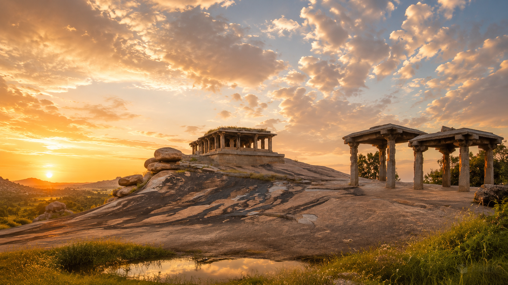

ДОПОЛНИТЕЛЬНОЕ ПУТЕШЕСТВИЕ
Хампи —
место силы Индии.
Путешествие из Гоа в древнюю столицу Виджаянагара: храмы, гигантские валуны, холмы, рассветы и живая история. Поездка дополняет ретрит ярким опытом и возможностью увидеть другую Индию.

Почему Хампи
ЮНЕСКО, древние храмы и пейзажи, которые трудно забыть.
Формат
Один или два дня из Гоа с комфортным трансфером и сопровождением.
Что включено
Трансфер, сопровождение, входные билеты в основные локации и вода.